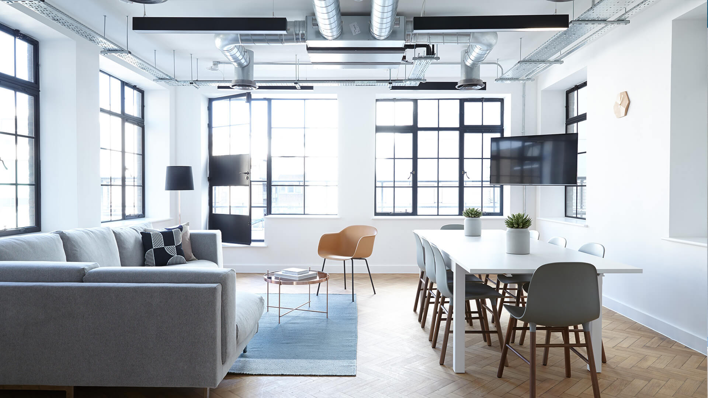
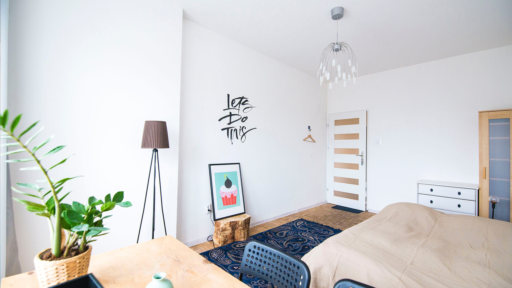
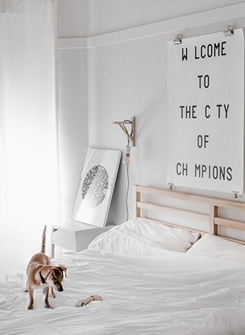
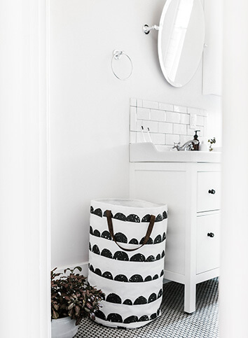
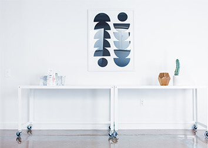
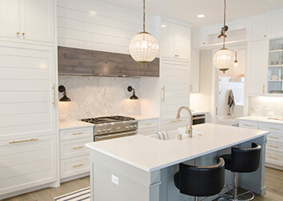
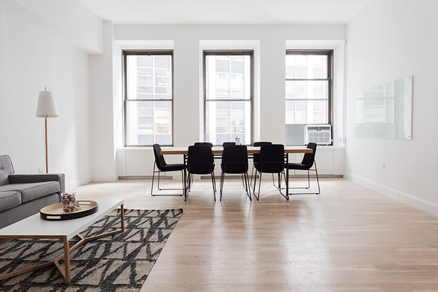

Oak House
Whole-home renovation · Portland
Quietly expressive spaces, shaped around the way you really live.
Explore our workStill House is an independent interior practice focused on homes with a sense of ease. We balance natural materials, useful layouts, and collected pieces to make every space feel lived-in from day one.
From a single-room refresh to a full renovation, we bring care and clarity to every step.
Start a conversation

Whole-home renovation · Portland

Kitchen and dining · Lake Oswego

Primary suite · Bend

Furnishing and styling · Portland

Apartment refresh · Seattle

Interior styling · Hood River